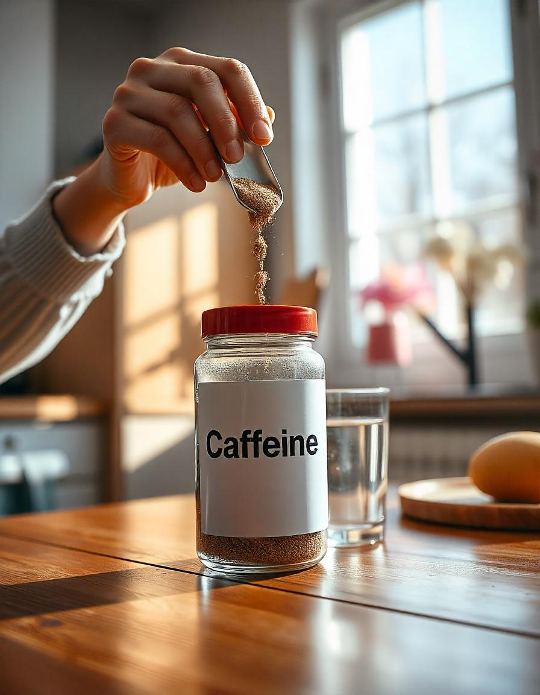

A cafeína é um alcaloide natural encontrado em várias plantas, sendo um dos estimulantes mais consumidos
no mundo. Ela é conhecida por melhorar o foco mental, aumentar a energia e ajudar no desempenho físico.
Benefícios da Cafeína:
- Aumento de energia e redução da sensação de fadiga.
- Melhora o foco mental e a concentração.
- Estimula o sistema nervoso central, melhorando o desempenho físico, especialmente em atividades de
resistência.
- Auxilia na queima de gordura ao aumentar o metabolismo e a termogênese.
- Pode melhorar o humor e diminuir a sensação de cansaço mental.
Onde Encontrar a Cafeína
A cafeína pode ser consumida em diversas formas, como café, chá e suplementos. Alguns locais onde você
pode encontrá-la incluem:
- Cafeterias e supermercados (cafés e bebidas energéticas).
- Lojas de suplementos alimentares (cafeína em cápsulas ou em pó).
- Online: Sites como Mercado Livre, Amazon e lojas especializadas em nutrição esportiva.
Como Tomar a Cafeína
A cafeína pode ser consumida de diferentes formas. Algumas recomendações gerais incluem:
- 1 xícara de café ou chá, no início do dia ou antes de atividades físicas, para melhorar o foco e
energia.
- Em cápsulas ou pó, com a dosagem recomendada de 100 a 200 mg de cafeína por dose.
- Evitar consumir cafeína em excesso (mais de 400 mg por dia) para evitar efeitos colaterais, como
insônia e ansiedade.
Consuma cafeína de forma moderada para evitar impactos negativos no sono e na saúde em geral.
Como é Produzida a Cafeína
A cafeína é extraída de diversas fontes naturais, como o café, chá, guaraná e cacau. O processo de
produção envolve:
- Extração da cafeína de grãos de café, folhas de chá ou sementes de guaraná.
- Processamento da cafeína extraída para purificação e concentração, transformando-a em pó ou
cápsulas.
- Embalagem da cafeína em diversos formatos para comercialização, como em pó, cápsulas ou em bebidas
energéticas.
Esse processo garante que a cafeína esteja pronta para ser consumida de forma eficiente e segura.